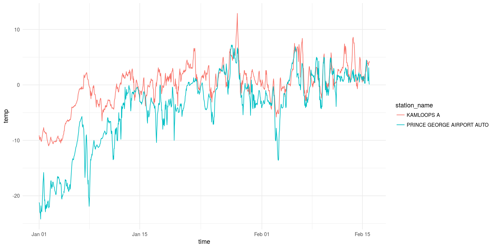

This package is makes it easier to search for and download multiple months/years of historical weather data from Environment and Climate Change Canada (ECCC) website.
Bear in mind that these downloads can be fairly large and performing multiple downloads may use up ECCC’s bandwidth unecessarily. Try to stick to what you need.
For more details and tutorials checkout the weathercan website
Installation
You can install weathercan directly from CRAN:
install.packages("weathercan")Use the devtools package to install the developmental package from GitHub:
install.packages("devtools") # If not already installed
devtools::install_github("ropensci/weathercan") To build the developmental vignettes (tutorials) locally, use:
devtools::install_github("ropensci/weathercan", build_vignettes = TRUE) View the available vignettes with vignette(package = "weathercan")
View a particular vignette with, for example, vignette("weathercan", package = "weathercan")
General usage
To download data, you first need to know the station_id associated with the station you’re interested in.
Stations
weathercan includes a data frame called stations which includes a list of stations and their details (including station_id.
head(stations)## # A tibble: 6 x 12
## prov station_name station_id climate_id WMO_id TC_id lat lon elev interval start end
## <fct> <chr> <fct> <fct> <fct> <fct> <dbl> <dbl> <dbl> <chr> <int> <int>
## 1 AB ABEE AGDM 32232 3010010 71285 XAF 54.3 -113. 664 day 2002 2018
## 2 AB ABEE AGDM 32232 3010010 71285 XAF 54.3 -113. 664 hour 1990 2018
## 3 AB ABEE AGDM 32232 3010010 71285 XAF 54.3 -113. 664 month 2002 2007
## 4 AB ACADIA VALLEY 2030 3020018 <NA> <NA> 51.2 -110. 732 day 1980 1991
## 5 AB ACADIA VALLEY 47748 3020035 71048 PAC 51.1 -110. 735 day 2009 2018
## 6 AB ACADIA VALLEY 2030 3020018 <NA> <NA> 51.2 -110. 732 hour NA NAglimpse(stations)## Observations: 26,208
## Variables: 12
## $ prov <fct> AB, AB, AB, AB, AB, AB, AB, AB, AB, AB, AB, AB, AB, AB, AB, AB, AB, AB, AB...
## $ station_name <chr> "ABEE AGDM", "ABEE AGDM", "ABEE AGDM", "ACADIA VALLEY", "ACADIA VALLEY", "...
## $ station_id <fct> 32232, 32232, 32232, 2030, 47748, 2030, 47748, 2030, 47748, 2032, 2032, 20...
## $ climate_id <fct> 3010010, 3010010, 3010010, 3020018, 3020035, 3020018, 3020035, 3020018, 30...
## $ WMO_id <fct> 71285, 71285, 71285, NA, 71048, NA, 71048, NA, 71048, NA, NA, NA, NA, NA, ...
## $ TC_id <fct> XAF, XAF, XAF, NA, PAC, NA, PAC, NA, PAC, NA, NA, NA, NA, NA, NA, NA, NA, ...
## $ lat <dbl> 54.28, 54.28, 54.28, 51.18, 51.07, 51.18, 51.07, 51.18, 51.07, 51.07, 51.0...
## $ lon <dbl> -112.97, -112.97, -112.97, -110.23, -110.32, -110.23, -110.32, -110.23, -1...
## $ elev <dbl> 664.0, 664.0, 664.0, 732.0, 735.0, 732.0, 735.0, 732.0, 735.0, NA, NA, NA,...
## $ interval <chr> "day", "hour", "month", "day", "day", "hour", "hour", "month", "month", "d...
## $ start <int> 2002, 1990, 2002, 1980, 2009, NA, 2009, 1980, NA, 1965, NA, 1965, 1954, NA...
## $ end <int> 2018, 2018, 2007, 1991, 2018, NA, 2018, 1991, NA, 1965, NA, 1965, 1962, NA...You can look through this data frame directly, or you can use the stations_search function:
stations_search("Kamloops", interval = "hour")## # A tibble: 3 x 12
## prov station_name station_id climate_id WMO_id TC_id lat lon elev interval start end
## <fct> <chr> <fct> <fct> <fct> <fct> <dbl> <dbl> <dbl> <chr> <int> <int>
## 1 BC KAMLOOPS A 1275 1163780 71887 YKA 50.7 -120. 345. hour 1953 2013
## 2 BC KAMLOOPS A 51423 1163781 71887 YKA 50.7 -120. 345. hour 2013 2018
## 3 BC KAMLOOPS AUT 42203 1163842 71741 ZKA 50.7 -120. 345 hour 2006 2018Time frame must be one of “hour”, “day”, or “month”.
You can also search by proximity:
stations_search(coords = c(50.667492, -120.329049), dist = 20, interval = "hour")## # A tibble: 3 x 13
## prov station_name station_id climate_id WMO_id TC_id lat lon elev interval start end
## <fct> <chr> <fct> <fct> <fct> <fct> <dbl> <dbl> <dbl> <chr> <int> <int>
## 1 BC KAMLOOPS A 1275 1163780 71887 YKA 50.7 -120. 345. hour 1953 2013
## 2 BC KAMLOOPS AUT 42203 1163842 71741 ZKA 50.7 -120. 345 hour 2006 2018
## 3 BC KAMLOOPS A 51423 1163781 71887 YKA 50.7 -120. 345. hour 2013 2018
## # ... with 1 more variable: distance <dbl>Weather
Once you have your station_id(s) you can download weather data:
kam <- weather_dl(station_ids = 51423, start = "2018-02-01", end = "2018-04-15")
kam## # A tibble: 1,776 x 35
## station_name station_id station_operator prov lat lon elev climate_id WMO_id TC_id
## * <chr> <dbl> <chr> <fct> <dbl> <dbl> <dbl> <chr> <chr> <chr>
## 1 KAMLOOPS A 51423 NAV Canada BC 50.7 -120. 345. 1163781 71887 YKA
## 2 KAMLOOPS A 51423 NAV Canada BC 50.7 -120. 345. 1163781 71887 YKA
## 3 KAMLOOPS A 51423 NAV Canada BC 50.7 -120. 345. 1163781 71887 YKA
## 4 KAMLOOPS A 51423 NAV Canada BC 50.7 -120. 345. 1163781 71887 YKA
## 5 KAMLOOPS A 51423 NAV Canada BC 50.7 -120. 345. 1163781 71887 YKA
## 6 KAMLOOPS A 51423 NAV Canada BC 50.7 -120. 345. 1163781 71887 YKA
## 7 KAMLOOPS A 51423 NAV Canada BC 50.7 -120. 345. 1163781 71887 YKA
## 8 KAMLOOPS A 51423 NAV Canada BC 50.7 -120. 345. 1163781 71887 YKA
## 9 KAMLOOPS A 51423 NAV Canada BC 50.7 -120. 345. 1163781 71887 YKA
## 10 KAMLOOPS A 51423 NAV Canada BC 50.7 -120. 345. 1163781 71887 YKA
## # ... with 1,766 more rows, and 25 more variablesYou can also download data from multiple stations at once:
kam_pg <- weather_dl(station_ids = c(48248, 51423), start = "2018-02-01", end = "2018-04-15")And plot it:
library(ggplot2)
ggplot(data = kam_pg, aes(x = time, y = temp, group = station_name, colour = station_name)) +
theme_minimal() +
geom_line()
Citation
citation("weathercan")##
## To cite 'weathercan' in publications, please use:
##
## LaZerte, Stefanie E and Sam Albers (2018). weathercan: Download and format weather data
## from Environment and Climate Change Canada. The Journal of Open Source Software
## 3(22):571. doi:10.21105/joss.00571.
##
## A BibTeX entry for LaTeX users is
##
## @Article{,
## title = {{weathercan}: {D}ownload and format weather data from Environment and Climate Change Canada},
## author = {Stefanie E LaZerte and Sam Albers},
## journal = {The Journal of Open Source Software},
## volume = {3},
## number = {22},
## pages = {571},
## year = {2018},
## url = {http://joss.theoj.org/papers/10.21105/joss.00571},
## }License
The data and the code in this repository are licensed under multiple licences. All code is licensed GPL-3. All weather data is licensed under the (Open Government License - Canada).
Similar packages
weathercan and rclimateca were developed at roughly the same time and as a result, both present up-to-date methods for accessing and downloading data from ECCC. The largest differences between the two packages are: a) weathercan includes functions for interpolating weather data and directly integrating it into other data sources. b) weathercan actively seeks to apply tidy data principles in R and integrates well with the tidyverse including using tibbles and nested listcols. c) rclimateca contains arguments for specifying short vs. long data formats. d) rclimateca has the option of formatting data in the MUData format using the mudata2 package by the same author.
CHCN is an older package last updated in 2012. Unfortunately, ECCC updated their services within the last couple of years which caused a great many of the previous web scrapers to fail. CHCN relies on one of these older web-scrapers and so is currently broken.
Contributions
We welcome any and all contributions! To make the process as painless as possible for all involved, please see our guide to contributing
Code of Conduct
Please note that this project is released with a Contributor Code of Conduct. By participating in this project you agree to abide by its terms.